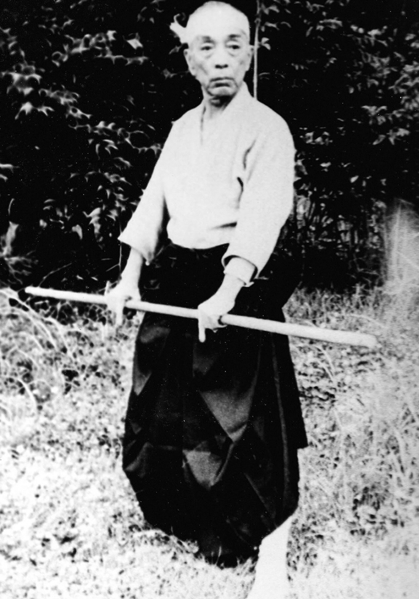

Toshitsugu Takamatsu

Toshitsugu Takamatsu was born on March 10, 1889 in Hyogo Prefecture, Japan. He began studying martial arts at the age of nine and mastered various styles from Ishitani Matsutaro, Mizuta Yoshitaro Tadafusa, and his grandfather Toda Shinryuke. As a teenager he was an accomplished budoka, having won several challenge matches against other martial artists. As a young man in his twenties, he retreated to the mountains of Kobe to continue his rigorous physical and spiritual practice.
After leaving the mountains he traveled to China, and for 10 years encountering many life and death situations in true fighting. He reportedly fought many strong Chinese martial artists and used his budo to defend himself against even wild animals. In 1919, Takamatsu-sensei returned to Japan in order to master spiritual studies and became the head monk at a mountain temple of esoteric Buddhism in the Yamato district. Eventually he left the temple and in the 1950s, he taught martial arts in Nara Prefecture.
In 1957 he met Hatsumi Masaaki and groomed him to be his successor. Referred by Hatsumi-sensei as the “last true combat ninja,” the venerable Takamatsu-sensei passed away in May of 1972, at the age of 84 years. For all the martial arts he had studied Takamatsu was known in Japan only for the Kukishinden Ryu. When he died, his neighbors were shocked to read in his obituary that he was, in fact, also a Grandmaster of the last schools of Ninjutsu. Takamatsu once sent Hatsumi this poem:
Long ago I was an accomplished warrior of the Koppojutsu tradition.
I was courageous, and as intense as a flame,
Even in battle against dangerous animals.
I have a heart that is like the wild flowers of the meadow,
And yet as straight and true as the bamboo.
Not even ten thousand enemies can cause me fear.
Who is there in the world who can keep alive
this will of the warrior's heart?
There you are. This one sent to me by the Warrior Gods (Bujin).
I have been here waiting for you through the ages.
For more on the life and countless battles of Toshitsugu Takamatsu, please read:
Essence of Ninjutsu by Masaaki Hatsumi.